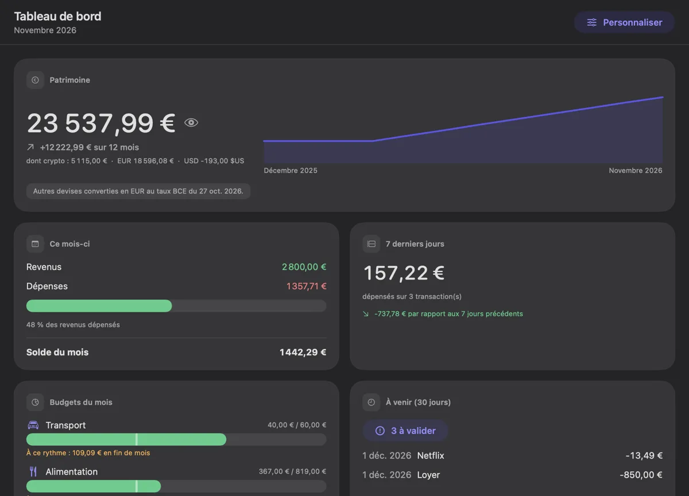

Comprenez enfin où passe votre argent.
Une vraie application Mac pour votre budget et vos comptes : gratuite, sans publicité, sans compte à créer. Vos données restent sur votre Mac.
Bientôt disponibleDécouvrir les fonctions
La première version n'est pas encore publiée. Être prévenu à sa sortie
Pour macOS 14 ou plus récent, sur Mac Intel et Apple Silicon.

Tout ce qu'il faut pour gérer vos finances personnelles
Enveloppes et budgets
Une enveloppe par catégorie et par mois, report, assistant, alertes de rythme.
En savoir plus →Plusieurs comptes
Banque, carte, espèces, épargne, devises (taux de la BCE), virements, ventilations.
Import et export
CSV, OFX, QIF, MT940, CAMT.053 ; correction ligne par ligne, doublons, lot annulable.
En savoir plus →Rapports et santé
Mensuel, tendance, 50/30/20, projection, santé financière, générateur libre, PDF.
En savoir plus →Pièces jointes et tickets
Joignez un fichier ou scannez un ticket (lu sur votre Mac), retrouvez-les au même endroit.
Règles et bénéficiaires
Classement automatique, fusion des noms de commerçants, étiquettes.
Récurrents et abonnements
Échéances automatiques, abonnements détectés dans votre historique.
Prêts et objectifs
Échéancier, remboursement anticipé comparé, objectifs d'épargne, simulations.
Compte partagé
Un seul compte, des droits choisis par personne, protégés par signature.
En savoir plus →Sauvegardes et intégrité
Copies vérifiées, aperçu avant restauration, réparation, journal et annulation.
En savoir plus →Widgets, Siri, Raccourcis
Patrimoine, budgets et « Où part l'argent » sur le Bureau ; ajoutez une dépense à la voix.
Rappels
Notifications avec boutons : valider ou ignorer une échéance sans ouvrir l'app.
Vos finances restent entre vos mains.
- Aucun compte à créer : ouvrez l'app et commencez.
- Tout reste sur votre Mac : aucune donnée envoyée à l'éditeur, aucun pistage.
- Verrouillage et discrétion : Touch ID, montants masqués, fenêtre cachée des captures.
Le parcours de vos données
Votre Mac → un fichier lisible sur votre disque → (si vous le choisissez) un dossier iCloud Drive, Dropbox ou Syncthing. Aucun serveur de l'éditeur ne reçoit quoi que ce soit.
Différent par nature.
100 % SwiftUI
Une vraie app Mac, pas une page web empaquetée.
7 formats
Import CSV, OFX, QIF, MT940, CAMT.053 et plus.
Gratuit
Pas de palier payant, pas de publicité.
Vérifié
Plus de 140 tests automatiques et un contrôle avant chaque version.
Importez de partout
Vos relevés bancaires, quel que soit le format.
Questions fréquentes
Mes données sont-elles envoyées quelque part ?
Non. Elles restent sur votre Mac. L'app ne contacte que les services que vous activez.
Pocket Ledger est-il vraiment gratuit ?
Oui : pas de palier payant, pas de publicité, aucune donnée vendue.
Comment importer les relevés de ma banque ?
Un assistant lit votre CSV, vous laisse corriger chaque ligne et repère les doublons. OFX, QIF, MT940 et CAMT.053 sont aussi lus.
Puis-je l'utiliser sur plusieurs Macs ?
Oui : choisissez un dossier iCloud Drive, Dropbox ou Syncthing, l'app recharge le fichier quand il change.
Et sur iPhone ?
En construction : l'app iPhone et iPad est écrite et doit être essayée sur de vrais appareils avant une bêta. Voir la feuille de route.
Construit au grand jour
La feuille de route et le journal des versions sont publics.
Prêt à y voir clair ?
Bientôt disponibleLire l'aide
La première version n'est pas encore publiée. Être prévenu à sa sortie